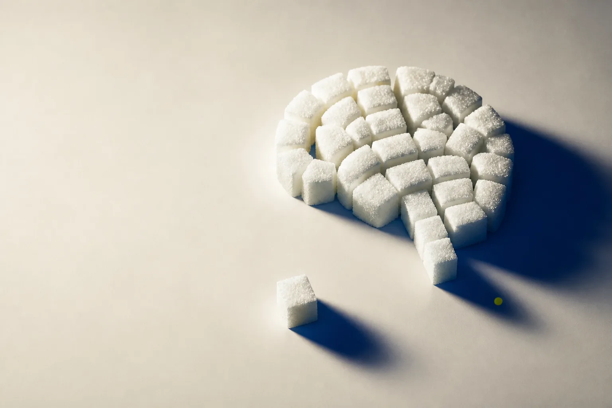

Сигнал
Инсулин связывается с рецептором
Рецепторы есть в гиппокампе и других областях, связанных с обучением и памятью.
Анализ крови может выглядеть спокойно, но он не показывает, насколько хорошо клетки мозга отвечают на сигнал инсулина. Разбираемся, что известно науке — и где пока заканчиваются факты.
5 источников
рецензируемые публикации

Глюкоза ≠ вся картина Уровень сахара и чувствительность к инсулину — не одно и то же.
Не только про сахар
Большая часть глюкозы попадает в мозг без прямого участия инсулина. Но сам инсулин работает там как сигнальная молекула: участвует в пластичности синапсов, обучении, памяти и регуляции аппетита.
Сигнал
Рецепторы есть в гиппокампе и других областях, связанных с обучением и памятью.
Ответ
Сигнальные пути помогают нейронам адаптироваться, образовывать связи и использовать энергию.
Сопротивление
При резистентности ответ на инсулин ослабевает, даже если гормон присутствует.
Главное различие
Глюкоза натощак показывает концентрацию сахара в крови в конкретный момент. Она не измеряет, как нейроны реагируют на инсулин. Поэтому нормальный показатель сам по себе не подтверждает и не исключает нарушения инсулинового сигналинга в мозге.
Измеряется обычным анализом
Рутинного теста пока нет
В исследованиях используют нейровизуализацию, введение инсулина через нос, анализ спинномозговой жидкости и посмертной ткани. Это не скрининговые тесты.
Что увидели учёные
Исследования связывают нарушенный инсулиновый сигналинг с изменением метаболизма мозга, более слабой памятью и патологией болезни Альцгеймера. Но связь не означает, что один фактор неизбежно вызывает другой.
Экспертный обзор описывает данные о сниженной реакции мозга на инсулин при старении и болезни Альцгеймера, в том числе у людей без диабета.
В посмертной ткани некоторые показатели инсулинового сигналинга были сходны у людей с диабетом и без него; один из маркеров был связан с патологией Альцгеймера и более низкими когнитивными показателями.
В ткани гиппокампа людей с болезнью Альцгеймера реакция сигнального пути на инсулин была снижена независимо от наличия диабета, а изменения IRS-1 коррелировали с когнитивным снижением.
У здоровых взрослых более высокая системная инсулинорезистентность была связана с более слабой рабочей памятью; у молодых участников — и с более низким метаболизмом глюкозы в ряде областей мозга.
Почему это обсуждают
Инсулиновые рецепторы и связанные с ними сигнальные пути представлены в гиппокампе — области, которая помогает формировать и извлекать воспоминания. Нарушение этих путей рассматривают как один из возможных механизмов когнитивного снижения.
“ Это часть сложной картины, а не единственная причина деменции.
Забывчивость может быть связана со сном, стрессом, депрессией, лекарствами, дефицитами, заболеваниями щитовидной железы и многими другими факторами.
Что забрать с собой
Обычный сахар крови не является тестом на чувствительность мозга к инсулину.
Научная связь с деменцией не означает, что ухудшение памяти неизбежно.
Для «инсулинорезистентности мозга» пока нет общепринятого рутинного анализа.
Первоисточники